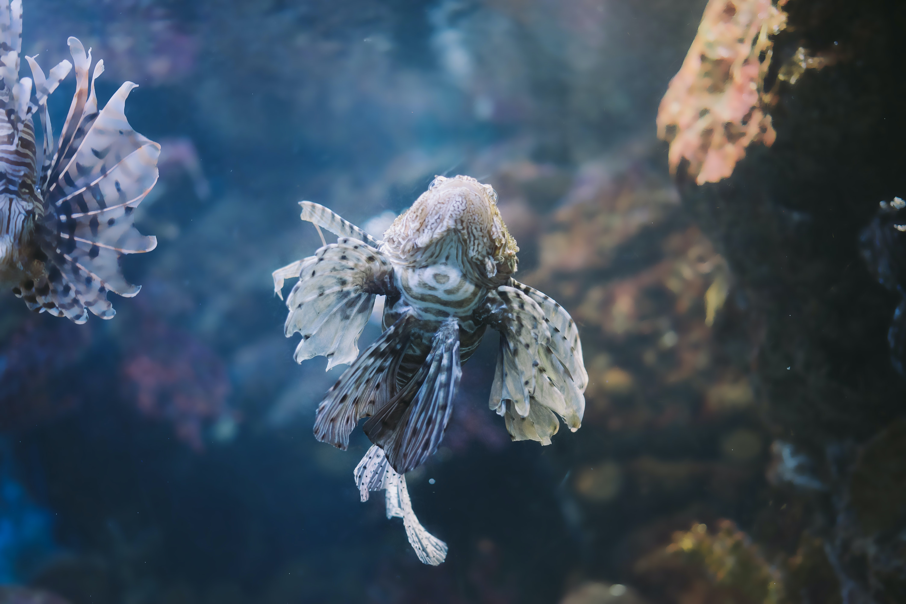
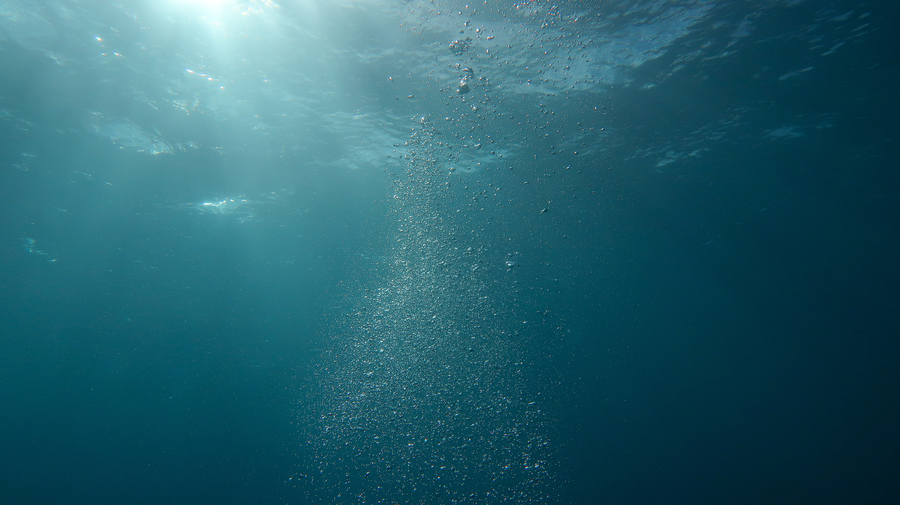

Oysters, as a keystone species, can filter up to 50 gallons of water per day, cleaning the surrounding water of chemicals and pollutants, with this, scientists have discovered that oysters contain microplastics, plastic pieces that measure less than 5 mm in size in one dimension.
Click to view more

The problems we face
Oceans, which cover 70% of our planet's surface, play a critical role in the health of our world and its inhabitants.
It has been estimated the yearly cost of invasive species to the US economy is $137 billion.
This damage is amplified by climate change, which forces invasive species to the poles, resulting in an expanded area of intrusions.
Current models of ocean current are limited in scale by the lack of data, and accuracy due to little scalability.
Click to view more

our aim
Project Oyster intends to protect fisheries for countries that rely on fish as a staple food source, thereby ensuring food security, while also preparing to preserve the marine ecology and prevent the extinction of existing species.
Physics-informed neural networks are a sort of universal function approximator that may include knowledge of any physical rules governing a given data-set in the learning process and are characterized by partial differential equations. They overcome the poor data availability of various biological and engineering systems, which causes most state-of-the-art machine learning algorithms to be useless in these settings due to a lack of robustness. Prior knowledge of general physical principles acts as a regularization agent in neural network training, limiting the space of admissible solutions and boosting the correctness of function approximation.
the difference
Traditional neural networks are a set of algorithms that are designed to learn the underlying relationships between data sets. Although neural networks excel at tasks such as classification, they are horrible at modeling physical data because their outputs frequently contradict fundamental physical rules such as mass and energy conservation. As a result, in 2019, researchers presented physics-informed neural networks, which can incorporate real-world physics restrictions into neural network flexibility. Because the motion of objects is determined by physics, we can investigate how particles are transported through substances.
What project Oyster is doing
Because the motion of objects is determined by physics, we can investigate how particles are transported through substances. Following this line of thought, we can simulate ocean currents to determine the movement of invasive species, which has not been studied before, and our effort is the first to do so. So, knowing where and when the invading species and larvae will appear, we can target our preventative efforts in the areas where they will appear.
What makes us stand out
For starters, our system produces precise outcomes on a wide scale. The greatest error bound while modeling the entire ocean is 2%. To put this in context, if we used neural networks, the simulation would fail 30 seconds in owing to massive mistakes. Second, the neural network is inexpensive. Because our system requires little data, not many sensors are required to get this project up and running. Third, we have greater computing efficiency. When original methods require supercomputers, ours can be executed on a home computer. This is significant because it indicates that everyone in this room has the opportunity to participate. When citizen participation reaches that level, we will be considerably closer to breaking down current scientific hurdles.
Future Developments
Click on card to read more
Rescue Operations
Using survivors' starting location as the origin, Project Oyster's Model could be used to predict how the person would drift due to the ocean current flow, greatly lowering the search area and the amount of time and resources needed to accomplish rescue or retrieval missions.
algae bloom formation
Projection of the flow of nutrients
Hazard containment
Oil spills and radioactive waste spread can be predicted and contained in the event of an accident